VETAI GLOBAL / VETERINARY INTELLIGENCE
مستقبل الطب البيطري
من المعرفة إلى رعاية أفضل
مستقبل الطب البيطري
يبدأ بالذكاء.
منصة معرفية عالمية تجمع الطب البيطري والذكاء الاصطناعي والأبحاث والتعليم والبيانات — لتمنح الأطباء والطلاب والباحثين أدوات أوضح، ومسارات تعلّم أعمق، وقرارات أكثر مسؤولية.
معرفة بيطرية · بحث علمي · ذكاء اصطناعي مساعد • واجهة متعددة اللغات قابلة للتوسع

VETAI NEURAL COREONLINE
⌬تحليل متعدد المحاورClinical · Research · Learning
✳ذكاء مساعدHuman-led decisions
Animal health intelligenceتصوّر واجهة — ليس نتيجة تشخيصية
AI × VET
GLOBAL RESEARCH
عيادة بيطرية رقمية · إشراف د. محجوبي عبدالناصر
رعاية بيطرية بدقة الطبيب،
رعاية بيطرية بدقة الطبيب،
في متناول كل مربٍّ
استكشف الأعراض والمراجع والأدوات التعليمية والبيانات البيطرية في مساحة واحدة. صُممت المنصة لدعم الأطباء والطلاب والباحثين والمربين، مع إبقاء القرار السريري للطبيب البيطري.
103مقالًا مفصلًا
101مرضًا في الفهرس
1200+موضوع عند الطلب
22مادة للاختبار
من هو مريضك؟اختر النوع لتشاهد نموذجه ثلاثي الأبعاد وتسمع صوته وتقرأ ملفه الكامل ومعدلاته الطبيعية
حالة طارئة؟ نزيف، اختناق، تشنجات، صعوبة تنفس، تسمم — لا تنتظر، اتصل بطبيبك البيطري فورًا.
لمن صُمّمت؟
ثلاثة مستويات، منصة واحدة
اختر الطريقة التي تناسبك وستتكيف المنصة معك.
مبسّط وعملي
للمربي
علامات واضحة وخطوات عملية ومتى تستدعي الطبيب، وتنبيهات فورية للحالات الطارئة.
ابدأ من هناللمراجعة السريعة
لطالب الطب البيطري
المسبب والعلامات والتشخيص المخبري لكل مرض بأسلوب مختصر للمراجعة.
ابدأ من هناعلمي ومرجعي
للباحث والطبيب
الأسماء العلمية واستراتيجيات الضبط وروابط مباشرة إلى المراجع والأدبيات العلمية.
ابدأ من هناالوصول السريع
أهم أقسام المنصة
كل ما تحتاجه على بعد نقرة واحدة.
محتوى حي
جديد ومحدَّث
يتجدد يوميًا وكل ساعة
تحديث كل ساعة
—المعلومات المولَّدة من المساعد الذكي تعليمية وقد تحتوي أخطاء؛ لا تغني عن الطبيب، ولا تأتي من بحث مباشر على الإنترنت.
جديد اليوم
الحيوان:
التخصص:
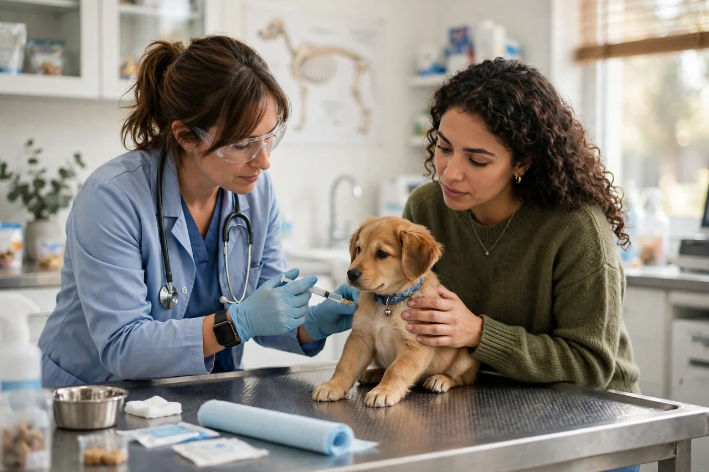
نصيحة سريعة لصحة حيوانك
اسأل المساعد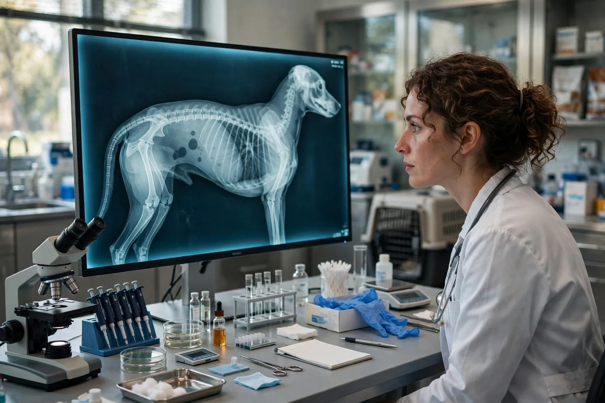
الذكاء الاصطناعي في قراءة الأشعة والتحاليل البيطرية
تساعد الخوارزميات في قراءة الصور والتحاليل، لكن نتائجها تحتاج دائمًا إلى مراجعة الطبيب البيطري.
اقرأ المزيدالإنفلونزا الطيرية: عزّز الأمن الحيوي في مزرعتك
قيّد دخول الزوار، عقّم المعدات والأحذية، واعزل أي طيور جديدة قبل ضمّها للقطيع.
المصدر: WOAHالإجهاد الحراري في الدواجن: التهوية والماء البارد
ارتفاع الحرارة يخفض الاستهلاك والإنتاج؛ وفّر تهوية جيدة وماءً نظيفًا وبارِدًا طوال اليوم.
اسأل المساعدمقاومة المضادات الحيوية: استخدم الدواء بوصفة فقط
الجرعات الخاطئة أو إيقاف العلاج مبكرًا يسرّعان ظهور سلالات مقاومة. التزم بإرشاد الطبيب.
المصدر: WOAHالوقاية من التهاب الضرع في الأبقار
نظافة الحلابة وتعقيم الحلمات بعد الحلب وفحص الحليب دوريًا من أهم خطوات الوقاية.
اسأل المساعدشارك الموقع وادعُ أصدقاءك
لا توجد تحديثات مطابقة لهذه التصفية اليوم.
المحتوى تعليمي ولا يغني عن استشارة الطبيب البيطري.
اقرأ
مقالات مختارة
اضغط للقراءة
محليًا
تخصصنا: صحة الحيوان في بيئتنا
أمراض تهم المربين والأطباء في منطقتنا
🗓️ رزنامة رعاية موسمية (عامة)
- 🌱 الربيع: مكافحة الطفيليات وبدء الرعي وفحص القطيع.
- ☀️ الصيف: الإجهاد الحراري والحشرات الناقلة (كذبابة الرمل) وتوفير الماء والظل.
- 🍂 الخريف: التحضير للشتاء، الفحص قبل التزاوج، والتغذية.
- ❄️ الشتاء: المأوى والتهوية وتغذية الحوامل.
عامة؛ يحدد الطبيب وبرنامج الدولة المواعيد الدقيقة للتلقيح.
مجتمع
تعلّم وتفاعل
مجتمع ودروس وألعاب
الجامعات والكليات البيطرية
كليات جزائرية ودولية مرتبة في أسفل الصفحة.

جديد في المنصة
قسم الصور والفيديوهات والحيوانات ثلاثية الأبعاد 🐎
أدِر نماذج حيوانات ثلاثية الأبعاد بيدك، وتصفّح صورًا بيطرية مشروحة بقلم الطبيب، وشاهد فيديوهات تعليمية مختارة بعناية للمربي والطالب والطبيب.
الصور والفيديوهات والحيوانات ثلاثية الأبعاد
معرض مرئي تعليمي متكامل: نماذج ثلاثية الأبعاد تفاعلية تُدار باللمس أو الفأرة، وصور من عالم الحيوان بشرح بيطري، وفيديوهات مختارة بعناية للمربين والطلاب والأطباء.
تفاعلي
حيوانات ثلاثية الأبعاد
اسحب النموذج لتدويره، وقرّب بعجلة الفأرة أو بإصبعيك
معرض
صور بيطرية مشروحة
كل صورة تحمل معلومة من الطبيب
شاهد وتعلّم
فيديوهات تعليمية مختارة
اضغط على أي فيديو لمشاهدته هنا مباشرة
الفيديوهات من قنوات تعليمية على يوتيوب وتعود حقوقها لأصحابها؛ اختيارها هنا لغرض تعليمي فقط ولا تغني عن استشارة الطبيب البيطري.
مُقيِّم الأعراض الذكي
صِف الأعراض فتحصل على تقييم إرشادي: مدى الاستعجال، احتمالات تعليمية، فحوصات قد يطلبها الطبيب، وماذا تفعل الآن. ليس تشخيصًا ولا بديلًا عن الفحص البيطري.
📋 بيانات الحالة
نتيجة التقييم
بانتظار الإدخالاكتب الأعراض ثم اضغط «قيّم الحالة». عند الاشتباه بحالة طارئة اتصل بالطبيب فورًا.
أداة تعليمية إرشادية؛ لا تحدد العلاج ولا تغني عن الطبيب البيطري.
خدمات ذكية جديدة
أدوات تعمل مباشرة داخل الصفحة.
💉 مولّد جدول التلقيح
—
مواعيد إرشادية؛ يعدّلها طبيبك حسب الحالة.
💧 احتياج الماء اليومي
—
تقدير عام ويزيد مع الحر والإرضاع.
أدوات بيطرية ذكية
أدوات تعليمية محلية تعمل مباشرة داخل الصفحة.
📅 عمر الحيوان
حساب العمر التقريبي من تاريخ الميلاد.
—
🔎 بحث خارجي سريع
يفتح نتائج حديثة على محركات البحث والفيديو.
الخدمات والمنصة
واجهة واحدة لخدمات الطبيب والمربين والطلاب والباحثين.
🩺
استشارات بيطرية
طلب استشارة، وصف المشكلة، نوع الحيوان، وإرسال التفاصيل للطبيب عبر واتساب.
اطلب استشارة🏥
الوقاية والرعاية
إرشادات عامة للتلقيح، التغذية، النظافة، العزل، والرعاية المنزلية والمزرعية.
🌍
الدراسة والجامعات
دليل كليات الطب البيطري الجزائرية والدولية مع روابط مباشرة في أسفل الصفحة.
📚
قاعدة المعرفة
محتوى قابل للبحث عن الأمراض، الأعراض، الوقاية، التغذية، الأدوية والمصطلحات.
بحث المعرفةالمجتمع
مجتمع المنصة قيد التأسيس، ولا توجد غرف نقاش حيّة بعد. يمكنك طلب الانضمام لمجموعة المربين أو الطلاب أو الأطباء عبر واتساب، أو طرح سؤالك على المساعد الذكي أدناه.
المساعد البيطري الذكي
اسأل عن الأمراض والتغذية والوقاية والدراسة. إجابات تعليمية لا تغني عن الطبيب.
مرحبًا! اسألني أي سؤال بيطري 🐾
قيّم آخر إجابة:
![الدكتور محجوبي عبدالناصر]()
مؤسس وباحث
السيرة العلمية والأكاديمية
الدكتور محجوبي عبدالناصر
طبيب بيطري | باحث أكاديمي | متخصص في مجال الذكاء الاصطناعي
خبير وباحث في تقاطعات الطب البيطري الحديث وتقنيات الذكاء الاصطناعي المتقدمة. كرّس جهوده الأكاديمية والعملية لتطوير أنظمة التشخيص العميق، محاكاة الأوبئة، ومنصات الرعاية الرقمية المتكاملة لخدمة المجتمع العلمي والأطباء البيطريين حول العالم.
الخبرة السريرية البيطرية
خبرة واسعة في الطب البيطري الجراحي، تشخيص الأمراض الباطنية، وإدارة الأنظمة الصحية الحيوانية.
البحث الأكاديمي
نشر العديد من الأوراق العلمية والأبحاث المحكمة في مجالات الأوبئة الحيوانية والصحة العامة والمحاكاة.
تخصص الذكاء الاصطناعي
تطوير خوارزميات التعلم العميق وتحليل البيانات الكبرى لتطبيقها في التشخيص الطبي البيطري التنبؤي.
التواصل والخدمات
للاستشارات والتعاون العلمي والأكاديمي.
✉️ البريد الإلكتروني
dr.mahdjoubi@gmail.com
☎ رقم الخدمة
+1 (415) 279-3963
اتصال مباشر · واتساب متاح
💬 واتساب الخدمة
مراسلة رقم الخدمة
📘 فيسبوك
الصفحة الرسمية
📍 الموقع
تنس ، الجزائر
طلب استشارة عبر واتساب
الموسوعة البيطرية وقاعدة المعرفة
ابحث في المحتوى الموجود بالموقع؛ ويمكن توسيع المكتبة لاحقًا بقاعدة بيانات حقيقية.
🔎
🐕 الكلاب والقطط
التغذية، الطفيليات، التلقيح، الأمراض الشائعة، الإسعافات الأولية، السلوك والعناية.
🐄 الأبقار والأغنام
التغذية، صحة الضرع، التناسل، الأمراض المعدية، الوقاية وإدارة القطيع.
🐓 الدواجن
الإدارة، التحصين، الأمن الحيوي، الحرارة والتهوية، التغذية ومراقبة القطيع.
⚠️ السموم المنزلية
الشوكولاتة والكافيين والبصل والثوم والعنب والزبيب أمثلة مهمة تستوجب الحذر والتقييم البيطري.
🧬 الطب البيطري الحديث
الذكاء الاصطناعي، التشخيص الرقمي، اللقاحات، الأدوية، الجينوميات والزراعة الدقيقة.
🎓 بطاقات للطلاب
مصطلحات وأسئلة مراجعة يمكن تحويلها إلى بنك أسئلة أكاديمي متكامل.
⚠️ المعلومات التثقيفية لا تُغني عن الفحص السريري، ولا ينبغي اعتماد جرعات أو علاج لحالة فردية دون طبيب بيطري.
📝 مقالات بيطرية جديدة
🐄 الجلد العقدي
فيروس جدري ينتقل بالحشرات الماصة للدم ويسبب حمى وعقدًا جلدية وانخفاض الإنتاج. تقوم المكافحة على التلقيح ومقاومة الحشرات وتقييد حركة الحيوانات والإبلاغ المبكر.
🐕 الليشمانيا الكلبية
تنقلها ذبابة الرمل، ومن أعراضها تساقط الشعر حول العينين وتقشر الجلد وفقدان الوزن. الوقاية بالطاردات ومنع تعرض الكلب وقت نشاط الذبابة، والتشخيص والعلاج بإشراف الطبيب.
🐓 الإنفلونزا الطيرية
مرض فيروسي خطير في الدواجن قد يسبب نفوقًا مفاجئًا. الأمن الحيوي وعزل الطيور وإبلاغ السلطات البيطرية عند الشك هي خط الدفاع الأول.
🐑 طاعون المجترات الصغيرة
يصيب الغنم والماعز بحمى وإسهال والتهاب رئوي ونسبة نفوق عالية، وهناك برنامج دولي يستهدف استئصاله بحلول 2030 عبر التلقيح والمراقبة.
🦠 الباروفيروس
التهاب معوي فيروسي شديد في الجراء يسبب قيئًا وإسهالًا دمويًا. الحماية بالتلقيح في موعده وتجنب اختلاط الجراء غير الملقحة، وهو طارئ يستدعي الطبيب فورًا.
☀️ الإجهاد الحراري للأبقار
ارتفاع الحرارة والرطوبة يقلل الأكل والحليب والخصوبة. التظليل والتهوية والماء البارد وتقليل الازدحام وتعديل أوقات التغذية من أهم الحلول.
🦷 صحة الأسنان
مرض اللثة من أكثر الأمراض شيوعًا في الكلاب والقطط، ورائحة الفم الكريهة والسرعة في الأكل إشارات مبكرة. التنظيف الدوري وفحص الأسنان يحميان القلب والكلى من انتشار العدوى.
🧫 الكيس العدري
ينتقل من الكلاب المصابة بدودة المشوكة إلى الإنسان والمواشي. معالجة الكلاب دوريًا ومنع تغذيتها بأحشاء نيئة وغسل اليدين يقطع دورة المرض.
مركز الأبحاث والمراجع
قسم مخصص للأعمال العلمية مع بنية جاهزة للتوسع.
🔬 الأبحاث والمنشورات
مكان منظم لإضافة عنوان البحث، الملخص، المؤلفين، الكلمات المفتاحية، PDF، DOI وروابط النشر.
📖 مراجعات علمية
مقالات مراجعة مبسطة حول الأمراض، اللقاحات، الأدوية، الرفق بالحيوان والطب الوقائي.
📊 بيانات ورسوم
قسم مستقبلي لعرض الجداول والرسوم والبيانات البحثية بصورة تفاعلية.
🤝 تعاون أكاديمي
نموذج للتواصل مع الباحثين والطلبة والجامعات والمختبرات.
المكتبة: مقالات بحثية وكتب مجانية
اضغط على أي عنوان لقراءة الملخص.
📚 الدليل المرجعي للأمراض البيطرية (3 مجلدات)
الكلاب والقطط · المجترات · الدواجن — Parvovirus، Distemper، حمى اللبن، BRD، Newcastle، Gumboro وغيرها. اضغط للفتح ←
📚 كتب مجانية PDF — قابلة للتنزيل بأغلفتها الأصلية
كتب أكاديمية مفتوحة الوصول من جامعات وناشرين علميين، وكتب كلاسيكية من الملك العام — مجانية قانونيًا بكاملها. اختر التصنيف ثم اضغط «تنزيل PDF».
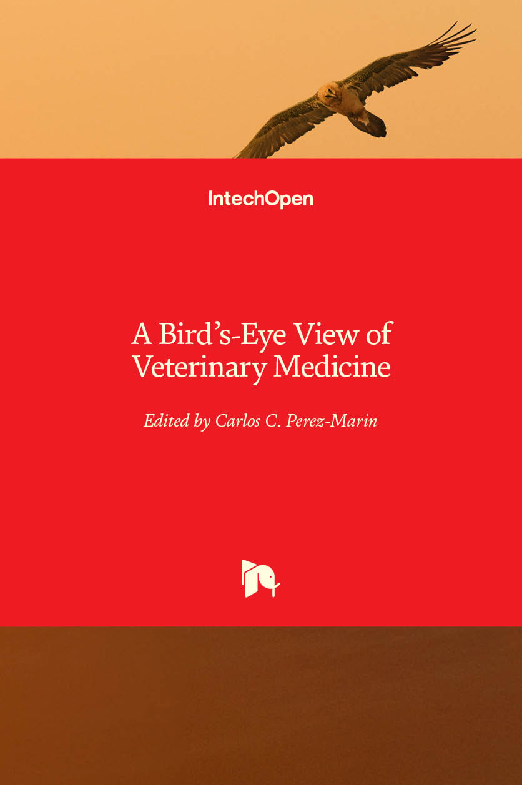
A Bird's-Eye View of Veterinary Medicine
نظرة شاملة على الطب البيطري الحديث: صحة ورفاهية حيوانات المزرعة والحيوانات الأليفة والبرية، والصحة العامة، وأحدث تقنيات التشخيص والبحث العلمي.
⬇ تنزيل PDFصفحة الكتاب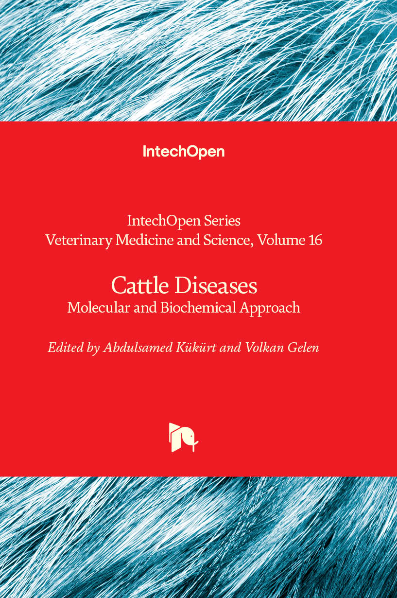
Cattle Diseases — Molecular and Biochemical Approach
أمراض الأبقار بمنهج جزيئي وكيميائي حيوي حديث: آليات حدوث الأمراض، والتشخيص المخبري والمناعي المتقدم، وأحدث ما توصلت إليه الأبحاث.
⬇ تنزيل PDFصفحة الكتاب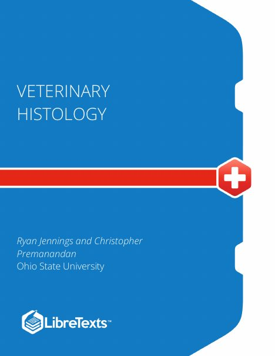
Veterinary Histology
مرجع التشريح المجهري (علم الأنسجة) للحيوانات الأليفة وحيوانات المزرعة والخنازير والجمال، بصور عالية الدقة مشروحة وأهداف تعلم ومسرد لكل جهاز من أجهزة الجسم.
⬇ تنزيل PDFصفحة الكتاب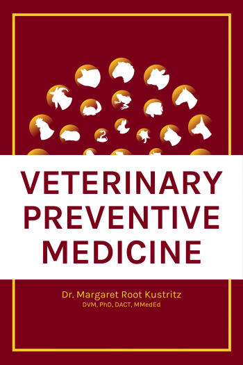
Veterinary Preventive Medicine
أسس الطب الوقائي البيطري: حماية صحة الحيوان والإنسان وتعزيزها، والوقاية من الأمراض والإعاقة والوفاة، ومهارات المشاركة في تحديات الصحة العالمية.
⬇ تنزيل PDFصفحة الكتاب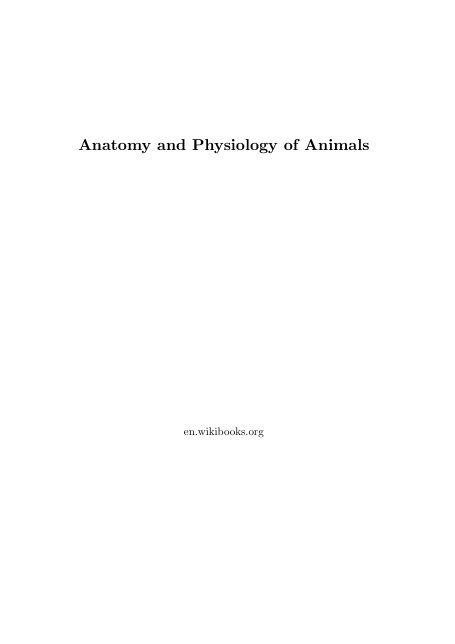
Anatomy and Physiology of Animals
تشريح جسم الحيوان ووظائف أعضائه جهازًا جهازًا، بأسلوب مبسط موجه لطلاب علوم الحيوان والتمريض البيطري، مع تمارين واختبارات ذاتية في نهاية الفصول.
⬇ تنزيل PDFصفحة الكتاب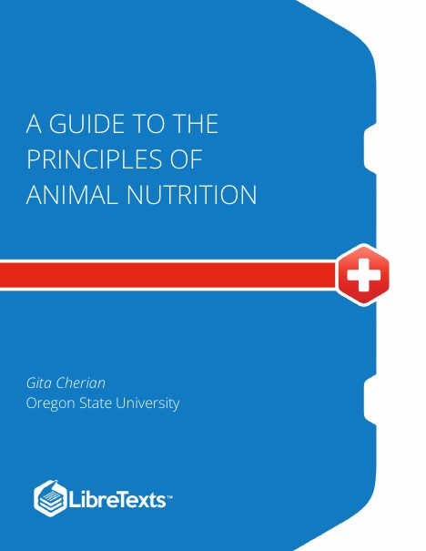
A Guide to the Principles of Animal Nutrition
مبادئ تغذية حيوانات الغذاء: العناصر الغذائية الستة وبناؤها وهضمها وتمثيلها، والطاقة الحيوية، وإضافات الأعلاف وتحليلها في المجترات والحيوانات أحادية المعدة.
⬇ تنزيل PDFصفحة الكتاب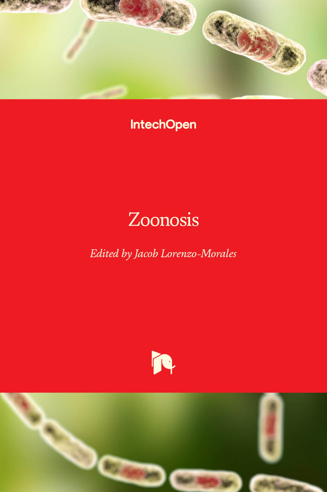
Zoonosis
الأمراض المشتركة بين الإنسان والحيوان (الأمراض المتنقلة): مصادرها وطرق انتقالها وتشخيصها والسيطرة عليها، من الجمرة الخبيثة وداء الكلب إلى الطفيليات المنقولة بالماء والغذاء.
⬇ تنزيل PDFصفحة الكتاب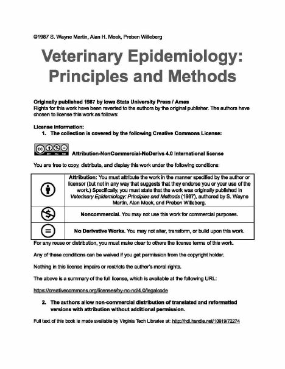
Veterinary Epidemiology: Principles and Methods
المرجع الكلاسيكي في الوبائيات البيطرية: دراسة الأمراض في قطعان الحيوانات، والمسوحات والدراسات التحليلية والملاحظة، وإدارة صحة القطيع — أساس فهم انتشار الأمراض المتنقلة ومكافحتها.
⬇ تنزيل PDFصفحة الكتاب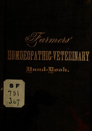
Homœopathic Veterinary Hand-Book
دليل عملي بلغة بسيطة للمربين: وصف أمراض الخيل والبقر والغنم والخنازير والكلاب وأعراضها وعلاجاتها المثلية (الهوميوباثي) كما مارسها الأطباء البيطريون في القرن التاسع عشر.
⬇ تنزيل PDFصفحة الكتابGuide to Veterinary Homeopathy of the Horse and Cow
دليل الهوميوباثي البيطري للخيل والبقر: الحمى والروماتيزم والتهابات الدماغ وغيرها، أعراضُ كل حالة وعلاجها المثلي خطوة بخطوة.
⬇ تنزيل PDFصفحة الكتابNew Manual of Homœopathic Veterinary Medicine
الدليل الشامل للطب البيطري المثلي: ترتيب سهل وشامل لأمراض الخيل والبقر والغنم والخنازير والكلاب وعلاجها بأبسط الطرق وأقلها كلفة — من أشهر مراجع الهوميوباثي البيطري الكلاسيكية.
⬇ تنزيل PDFصفحة الكتابتنبيه: كتب «الطب البديل» هنا كلاسيكيات تاريخية من الملك العام تُنشر للاطلاع التاريخي والبحثي، ولا تُغني عن الطب البيطري الحديث المبني على الدليل العلمي.
📚 مكتبتي البيطرية
مجموعة الكتب الخاصة بالدكتور محجوبي عبدالناصر — 36 كتابًا بصيغة PDF، منظمة أبجديًا وجاهزة للتنزيل المباشر مجانًا.
📗
Manual for the Management of Operations During an Animal Health Emergency (FAO, 2022)
PDF • 1.8 MB⬇ تنزيل
📕
A Textbook On Veterinary Surgery and Radiology, by S.K Nandi, Somar Halder & Mozammel Hoque
PDF • 14.4 MB⬇ تنزيل
📕
Clinical Pathology and Laboratory Techniques for Veterinary Technicians of Wiley Blackwell
PDF • 8.4 MB⬇ تنزيل
📕
Laboratory Manual on Animal Gynaecology by S.K. Agarwal, U. Shanker and M.R. Ansari
PDF • 2.7 MB⬇ تنزيل
لا توجد كتب مطابقة لبحثك.
🏛️ المكتبة العلمية الشاملة للطب البيطري
كتب بيطرية وتعليمية للطلاب والباحثين، امتحانات وأوراق أسئلة مقسمة حسب الدول (الجزائر · الوطن العربي · فرنسا · أمريكا)، أبحاث ومقالات حديثة، ومذكرات تخرج ورسائل ماجستير ودكتوراه — كلها منظمة بفلاتر ذكية: البلد، السنة، المستوى الدراسي، اللغة، والتخصص.
ملاحظة: جميع الروابط الخارجية رسمية (جامعات وهيئات ترخيص ومستودعات جامعية) أو مفتوحة الوصول قانونيًا. الكتب بصيغة PDF كاملة بأغلفتها في القسم السابق مباشرة «كتب مجانية PDF»، وهذا القسم ينظمها أكاديميًا مع بقية الموارد.
🗂️ مكتبة د. محجوبي (كتب · مقالات · امتحانات · صور)
سيتم نشر الكتب والمقالات والامتحانات هنا قريبًا.
🔬 مقالات بحثية مبسطة
📖 كتب ومصادر مجانية
روابط لمكتبات مفتوحة. وكتب د. محجوبي الخاصة في الصندوق أعلاه.
دليل ميرك البيطري (مجاني على الإنترنت)منشورات الفاو: الصحة الحيوانية والثروة الحيوانيةالمنظمة العالمية للصحة الحيوانية (WOAH)Open Library: كتب بيطرية للاستعارةInternet Archive: كتب قديمة ومتاحةPubMed Central: أبحاث مفتوحةDOAJ: مجلات علمية مفتوحةGoogle Scholar🌡️ الحرارة الطبيعية للحيوان
—
قيم تقريبية مقيسة شرجيًا؛ الارتفاع الواضح يستدعي طبيبًا.
📰 مجلات وجرائد بيطرية
📰 مجلات علمية
Veterinary Recordمجلة البيطرة البريطانيةJAVMAمجلة الجمعية الأمريكية للطب البيطريVeterinary Researchأبحاث مفتوحةActa Veterinaria Scandinavicaأبحاث بيطرية مفتوحةIrish Veterinary Journalمجلة مفتوحةVeterinary Sciences (MDPI)مقالات مفتوحة الوصولAnimals (MDPI)علوم الحيوان ورفاههPreventive Veterinary Medicineالطب الوقائي والوبائياتVeterinary Parasitologyالطفيليات البيطرية🗞️ جرائد وأخبار بيطرية
DVM360أخبار وموارد العياداتVIN Newsأخبار المهنة البيطريةAVMA Newsأخبار الجمعية الأمريكيةVet Timesصحيفة بيطرية بريطانيةVeterinary Practice Newsأخبار الممارسة البيطريةThe Poultry Siteأخبار الدواجنThe Cattle Siteأخبار الأبقار🐾 غرائب وعجائب الحيوانات
قصص حقيقية موثّقة من التاريخ — حيوانات صنعت أحداثًا لا تُنسى.

🐕 هاتشيكو: الكلب الذي انتظر صاحبه عشر سنوات
كان هاتشيكو كلبًا من سلالة أكيتا يرافق صاحبه الأستاذ الجامعي هيديسابورو أوينو كل صباح إلى محطة شيبويا في طوكيو، ويعود إلى المحطة مساءً لاستقباله. وفي مايو 1925 توفي الأستاذ فجأة أثناء عمله ولم يعد أبدًا، لكن هاتشيكو واصل الذهاب إلى المحطة كل يوم في موعد القطار نفسه لما يقارب عشر سنوات كاملة. ذاع صيته في الصحف اليابانية بوصفه رمزًا للوفاء، وظل على عادته حتى وفاته في 8 مارس 1935 قرب المحطة التي انتظر فيها كل تلك السنين.
⭐ أُقيم له تمثال برونزي أمام محطة شيبويا عام 1934 وهو ما زال حيًّا، وما زال التمثال أشهر نقطة لقاء في طوكيو حتى اليوم.
الصورة: Wikimedia Commons — Public domain

🛷 بالتو: كلب الزلاجة الذي أنقذ مدينة من الدفتيريا
في شتاء 1925 تفشّى وباء الدفتيريا القاتل في مدينة نوم المعزولة في ألاسكا، وكان المصل المضاد موجودًا على بُعد أكثر من ألف كيلومتر، في ظل عاصفة قطبية تمنع الطيران. نُقل المصل بسباق تتابع شارك فيه نحو عشرين سائق زلاجة وأكثر من مئة وخمسين كلبًا، وقاد بالتو الفريق في المرحلة الأخيرة والأخطر عبر العاصفة، فأوصل المصل إلى نوم فجر الثاني من فبراير. غطّت الصحف العالمية البطولة، وصار بالتو أشهر كلب زلاجة في العالم.
⭐ قطع سباق التتابع كاملًا مسافة 1085 كيلومترًا في خمسة أيام ونصف فقط، وهو إنجاز ما زال يُحتفى به سنويًّا في سباق «إيديتارود» الشهير.
الصورة: Wikimedia Commons — Public domain

🕊️ شير آمي: الحمامة التي أنقذت كتيبة كاملة
في أكتوبر 1918، خلال الحرب العالمية الأولى، حوصرت كتيبة أمريكية من الفرقة السابعة والسبعين في غابة أرغون بفرنسا، وانقطعت عنها الإمدادات، بل تعرضت لنيران صديقة خطأً. أرسل قائدها الرائد تشارلز ويتلسي آخر حمامة زاجلة لديه، شير آمي، تحمل رسالة تطلب وقف القصف. أُصيبت الحمامة في صدرها وفقدت إحدى ساقيها أثناء الطيران، لكنها أكملت مهمتها وقطعت نحو أربعين كيلومترًا، فوصلت الرسالة وتوقف القصف، ونُسب إليها إنقاذ نحو مئة وأربعة وتسعين جنديًّا.
⭐ منحتها فرنسا وسام «صليب الحرب» تقديرًا لبطولتها، وجسدها المحنّط معروض حتى اليوم في المتحف الوطني للتاريخ الأمريكي بواشنطن.
الصورة: Wikimedia Commons — Public domain

🐻 فويتيك: الدب الذي صار جنديًّا رسميًّا في الجيش
في عام 1942 اشترى جنود بولنديون في إيران دبًّا صغيرًا يتيمًا من صبي محلي، وربّوه في وحدتهم حتى كبر وصار فردًا منها. سُمّي فويتيك، وانضم رسميًّا إلى الجيش البولندي برقم عسكري ورتبة، حتى يتمكن من التنقل مع الوحدة والحصول على حصته من الطعام. وفي معركة مونتي كاسينو في إيطاليا عام 1944، ساعد الجنود في حمل صناديق ذخيرة المدفعية الثقيلة، فصارت صورته وهو يحمل قذيفة شعارًا رسميًّا لوحدته.
⭐ رُقّي فويتيك إلى رتبة عريف، وبعد الحرب عاش بقية حياته في حديقة حيوان إدنبرة في اسكتلندا حتى وفاته عام 1963.
الصورة: Wikimedia Commons — CC0

🚀 لايكا: أول كائن حي يدور حول الأرض
كانت لايكا كلبة ضالّة جُمعت من شوارع موسكو واختيرت لهدوئها وقدرتها على التحمل، فدُرّبت على البقاء في كبسولات ضيقة وعلى تحمّل اهتزازات الإطلاق. وفي الثالث من نوفمبر 1957 انطلقت على متن القمر الصناعي «سبوتنيك 2» لتصبح أول كائن حي يصل إلى مدار حول الأرض، مثبتةً أن الكائنات الحية تستطيع تحمّل الانطلاق إلى الفضاء. لم تكن عودتها ممكنة بتقنية ذلك الزمن، فماتت بعد ساعات من الإطلاق، وبقيت قصتها رمزًا مؤثرًا لتضحيات الحيوانات في سبيل العلم.
⭐ في عام 2008 كُشف عن تمثال للايكا قرب معهد أبحاث الطب العسكري في موسكو، تظهر فيه واقفة فوق نموذج لصاروخ فضائي.
الصورة من تدريبات كلاب الفضاء السوفيتية عام 1957.
الصورة: Wikimedia Commons — CC BY 4.0

🐈 سايمون: قط السفينة الحربية الحاصل على ميدالية البطولة
كان سايمون قطًّا يعيش على متن الفرقاطة البريطانية «أميثيست»، مهمته مطاردة الجرذان وحماية مخزون الطعام ورفع معنويات الطاقم. وفي أبريل 1949 تعرضت السفينة لقصف عنيف أثناء حادثة اليانغتسي الشهيرة، فأُصيب سايمون بشظايا، لكنه عاد بعد تعافيه إلى مطاردة الجرذان التي تكاثرت خلال الحصار الذي استمر مئة وواحد يوم. وحين عادت السفينة إلى بريطانيا استُقبل سايمون بطلًا، وكتب له الأطفال من أنحاء البلاد.
⭐ سايمون هو القط الوحيد في التاريخ الحاصل على ميدالية ديكين، وهي أعلى وسام بريطاني لبطولة الحيوانات في الحرب.
الصورة لقطط سفينة حربية بريطانية من الحقبة نفسها — صورة سايمون الأصلية محفوظة في متحف وغير حرة النشر.
الصورة: Wikimedia Commons — CC BY-SA 3.0

🐴 هانز الذكي: الحصان الذي علّم العلماء درسًا لا يُنسى
اشتهر الحصان هانز في برلين مطلع القرن العشرين بقدرته الظاهرة على إجراء العمليات الحسابية وضرب الأرض بحافره بعدد الإجابة الصحيحة، وجذبت عروضه جمهورًا كبيرًا من العلماء والمتفرجين. شكّلت السلطات لجنة علمية للتحقق، فتبيّن أنها ظاهرة حقيقية لكن بتفسير مختلف: كان هانز يقرأ تغيّرات لا إرادية بالكاد تُرى في ملامح السائل وتوتر جسده، فيتوقف عن الضرب عند الإجابة الصحيحة. لم يكن هانز يحسب، لكنه كان مراقبًا فائق الحساسية للبشر.
⭐ دخلت الظاهرة كتب علم النفس باسم «تأثير هانز الذكي»، وما زالت قاعدة أساسية عند تصميم تجارب سلوك الحيوان حتى اليوم: إخفاء الإجابة عن كل من يراه الحيوان.
الصورة: Wikimedia Commons — Public domain
🐶🐱 لأصحاب الكلاب والقطط
فصائل الكلاب والقطط بالصور والأسماء والمواصفات — وأداة ذكية لتتعرّف فصيلة حيوانك من صورته.
📸 اعرف فصيلة كلبك أو قطك من الصورة
ارفع صورة واضحة لحيوانك وسيحلّلها نموذج ذكاء اصطناعي يعمل داخل متصفحك مباشرة — صورتك لا تغادر جهازك أبدًا.
🐶 فصائل الكلاب

لابرادور ريتريفر
الحجم: كبير · الوزن: 25–36 كغ · العمر المتوقع: 10–12 سنة
الطبع: ودود، نشيط، ذكي — ممتاز مع العائلات والأطفال
💡 يحتاج إلى تمرين يومي وسباحة إن أمكن، وانتبه لوزنه لأنه يميل إلى السمنة وحب الأكل.
الصورة: Wikimedia Commons — CC0

الراعي الألماني
الحجم: كبير · الوزن: 22–40 كغ · العمر المتوقع: 9–13 سنة
الطبع: وفي، ذكي، شجاع — من أفضل كلاب الحراسة والخدمة
💡 يحتاج إلى تدريب مبكر ونشاط ذهني وجسدي يومي، وراقب صحة الوركين والمفاصل عند الطبيب البيطري.
الصورة: Wikimedia Commons — CC BY-SA 4.0

المسترد الذهبي
الحجم: كبير · الوزن: 25–34 كغ · العمر المتوقع: 10–12 سنة
الطبع: لطيف، صبور، محب للناس — مثالي للعائلات والمبتدئين
💡 مشّط فراءه الكثيف أسبوعيًا، ووفّر له اللعب والسباحة، وانتبه لنظافة أذنيه بعد البلل.
الصورة: Wikimedia Commons — CC BY-SA 4.0

البلدوغ الفرنسي
الحجم: صغير · الوزن: 8–14 كغ · العمر المتوقع: 10–14 سنة
الطبع: مرح، هادئ، عاطفي — رفيق شقق ممتاز
💡 تجنّب الحر والجهد الشديد بسبب أنفه القصير وصعوبة تنفسه، ونظّف ثنيات وجهه بانتظام.
الصورة: Wikimedia Commons — CC BY-SA 3.0

البودل
الحجم: متوسط · الوزن: 20–32 كغ · العمر المتوقع: 12–15 سنة
الطبع: ذكي جدًا، نشيط، أنيق — من أسهل السلالات تدريبًا
💡 فراؤه لا يتساقط تقريبًا لكنه يحتاج قصًا وتمشيطًا منتظمًا، ووفّر له ألعاب ذكاء يومية.
الصورة: Wikimedia Commons — CC BY-SA 3.0

البيغل
الحجم: متوسط · الوزن: 9–11 كغ · العمر المتوقع: 12–15 سنة
الطبع: فضولي، مرح، اجتماعي — كلب صيد بحاسة شم قوية
💡 امشِ به مقيدًا دائمًا لأنه يتبع الروائح، ودرّبه بصبر وانتبه لوزنه لأنه شره في الأكل.
الصورة: Wikimedia Commons — CC BY 4.0

الدشهند (كلب النقانق)
الحجم: صغير · الوزن: 7–14 كغ · العمر المتوقع: 12–16 سنة
الطبع: شجاع، عنيد، مرح — رغم صغر حجمه شخصيته كبيرة
💡 احمِ ظهره الطويل: امنع قفزه من الأماكن العالية وحافظ على وزنه مثاليًا لتجنب مشكلات العمود الفقري.
الصورة: Wikimedia Commons — CC BY-SA 4.0

الهاسكي السيبيري
الحجم: متوسط · الوزن: 16–27 كغ · العمر المتوقع: 12–15 سنة
الطبع: نشيط، مستقل، ودود — كلب زلاجات يحب البرد والجري
💡 يحتاج جريًا يوميًا طويلًا وسورًا آمنًا لأنه بارع في الهروب، ومشّط فراءه الكثيف في موسم التساقط.
الصورة: Wikimedia Commons — CC BY-SA 4.0

بوردر كولي
الحجم: متوسط · الوزن: 14–20 كغ · العمر المتوقع: 12–15 سنة
الطبع: الأذكى بين الكلاب، عامل لا يكلّ — يحتاج مهمة دائمًا
💡 لا يناسب الكسل: وفّر له تدريبًا وألعاب ذكاء ونشاطًا يوميًا مكثفًا وإلا ابتكر مشكلاته بنفسه.
الصورة: Wikimedia Commons — CC BY-SA 4.0

كورجي بيمبروك الويلزي
الحجم: صغير · الوزن: 10–14 كغ · العمر المتوقع: 12–15 سنة
الطبع: ذكي، جريء، مرح — كلب رعي قصير الأرجل قوي الشخصية
💡 راقب وزنه لأن ظهره الطويل لا يحتمل السمنة، ودرّبه بحزم لطيف فهو يميل للقيادة والعناد.
الصورة: Wikimedia Commons — CC BY-SA 4.0

شي تزو
الحجم: صغير · الوزن: 4–7 كغ · العمر المتوقع: 10–16 سنة
الطبع: عاطفي، هادئ، اجتماعي — كلب حضن ورفقة بامتياز
💡 فراؤه الطويل يحتاج تمشيطًا يوميًا وتنظيفًا حول العينين، وتجنّب تعريضه للحر الشديد.
الصورة: Wikimedia Commons — CC BY-SA 4.0

السلوقي العربي
الحجم: كبير · الوزن: 18–27 كغ · العمر المتوقع: 12–14 سنة
الطبع: هادئ، نبيل، مستقل — أقدم كلاب الصيد العربية وأسرعها تقريبًا
💡 يحتاج مساحات آمنة للعدو السريع وجلسات جري منتظمة، وهو حساس بطبعه فيُدرَّب برفق ودون قسوة.
الصورة: Wikimedia Commons — CC BY-SA 4.0
🐱 فصائل القطط

القط الفارسي (الشيرازي)
الحجم: متوسط · الوزن: 3–6 كغ · العمر المتوقع: 12–17 سنة
الطبع: هادئ، رقيق، محب للروتين — قط منزلي مثالي
💡 مشّط فراءه الطويل يوميًا كي لا يتشابك، ونظّف عينيه بانتظام، وراقب كليتيه بفحوص دورية.
الصورة: Wikimedia Commons — CC BY-SA 2.0

القط السيامي
الحجم: متوسط · الوزن: 3–6 كغ · العمر المتوقع: 15–20 سنة
الطبع: ثرثار، ذكي، اجتماعي جدًا — يرتبط بصاحبه بقوة
💡 لا يحب الوحدة: وفّر له رفقة ولعبًا تفاعليًا يوميًا، وفراؤه القصير سهل العناية بتمشيط أسبوعي.
الصورة: Wikimedia Commons — CC BY-SA 4.0

مين كون
الحجم: كبير · الوزن: 4–8 كغ · العمر المتوقع: 12–15 سنة
الطبع: عملاق لطيف، هادئ وواثق — ودود مع الأطفال والكلاب
💡 مشّط فراءه الكثيف مرتين أسبوعيًا، ووفّر له شجرة تسلق قوية تناسب حجمه الكبير ووزنه.
الصورة: Wikimedia Commons — CC BY-SA 4.0

القط البريطاني قصير الشعر
الحجم: متوسط · الوزن: 4–8 كغ · العمر المتوقع: 14–20 سنة
الطبع: هادئ، مستقل، متوازن — رفيق راقٍ قليل المطالب
💡 يميل إلى السمنة: اضبط حصص طعامه وشجّعه على اللعب اليومي، ومشّط فراءه الكثيف أسبوعيًا.
الصورة: Wikimedia Commons — CC BY 4.0

قط البنغال
الحجم: متوسط · الوزن: 4–7 كغ · العمر المتوقع: 12–16 سنة
الطبع: نشيط، فضولي، ذكي — فراء مرقّط كالنمر وطاقة عالية
💡 يحتاج لعبًا وتسلقًا وتحفيزًا ذهنيًا يوميًا، وكثير منها يحب الماء فلا تتفاجأ بفضوله حوله.
الصورة: Wikimedia Commons — CC BY-SA 4.0

قط سفينكس (أبو الهول)
الحجم: متوسط · الوزن: 3–6 كغ · العمر المتوقع: 9–13 سنة
الطبع: عاطفي، اجتماعي، مرح — يلازم صاحبه كالظل
💡 بلا فراء: حمّمه بانتظام لإزالة زيوت الجلد، واحمِه من البرد والشمس المباشرة داخل المنزل.
الصورة: Wikimedia Commons — CC BY-SA 4.0

راغدول
الحجم: كبير · الوزن: 4–9 كغ · العمر المتوقع: 12–17 سنة
الطبع: مسترخٍ، حنون، هادئ — يسترخي بين الذراعين كدمية قماش
💡 فراؤه الحريري نصف الطويل يحتاج تمشيطًا أسبوعيًا، وهو قط منزلي تمامًا لا يُترك خارجًا وحده.
الصورة: Wikimedia Commons — CC0

القط الاسكتلندي مطوي الأذن
الحجم: متوسط · الوزن: 3–6 كغ · العمر المتوقع: 11–15 سنة
الطبع: هادئ، لطيف، متكيّف — ملامحه البومية تأسر القلوب
💡 راقب مفاصله عند الطبيب البيطري بانتظام لأن السلالة عرضة لمشكلات غضروفية، واعتنِ بأذنيه المطويتين بتنظيف لطيف.
الصورة: Wikimedia Commons — CC BY-SA 3.0

القط الحبشي
الحجم: متوسط · الوزن: 3–5 كغ · العمر المتوقع: 9–15 سنة
الطبع: نشيط، ذكي، فضولي — من أقدم السلالات وأكثرها حبًا للعب
💡 وفّر له أماكن تسلق عالية وألعابًا تفاعلية يومية، وفراؤه القصير لا يحتاج إلا تمشيطًا أسبوعيًا.
الصورة: Wikimedia Commons — CC BY-SA 4.0

الأزرق الروسي
الحجم: متوسط · الوزن: 3–7 كغ · العمر المتوقع: 15–20 سنة
الطبع: هادئ، خجول مع الغرباء، وفيّ لأسرته — فراء فضي مخملي
💡 يحب الروتين والهدوء: ثبّت مواعيد إطعامه ولعبه، ومشّط فراءه المزدوج مرة أسبوعيًا.
الصورة: Wikimedia Commons — CC BY-SA 4.0

الأنجورا التركي
الحجم: متوسط · الوزن: 2.5–5 كغ · العمر المتوقع: 12–18 سنة
الطبع: رشيق، ذكي، مرح — فراء أبيض حريري وعشق للمرتفعات
💡 مشّط فراءه الحريري مرتين أسبوعيًا، واعلم أن الأنجورا الأبيض ذا العينين الزرقاوين قد يولد أصمّ فيُفحص سمعه صغيرًا.
الصورة: Wikimedia Commons — CC BY-SA 3.0

الماو العربي (القط العربي)
الحجم: متوسط · الوزن: 3–6 كغ · العمر المتوقع: 12–14 سنة
الطبع: قوي، مستقل، صياد ماهر — قط صحراوي متأقلم مع الحر
💡 سلالة طبيعية قوية التحمل: وفّر له نشاطًا ولعب صيد يوميًا، وفراؤه القصير سهل العناية جدًا.
الصورة: Wikimedia Commons — CC BY-SA 3.0
🎮 ألعاب حيوانات عصرية
عشر ألعاب حديثة بصور حقيقية وحركة سلسة، تعمل باللمس ولوحة المفاتيح، وتحفظ أفضل نتائجك على جهازك.
🃏
ذاكرة الصور
اقلب البطاقات وطابق صور الحيوانات بأقل حركات وأسرع وقت.
اختر المستوى وابدأ اللعب
🐇
عدّاء الأرنب
اقفز فوق الصبار والصخور والقنافذ — اضغط المسافة أو انقر الحقل للقفز.
أفضل مسافة: 0 م
📸
خمّن الحيوان
صورة حقيقية وأربعة خيارات وعدّاد وقت — أجب بسرعة واجمع السلاسل.
🐾
أفضل نتيجة: 0
🐍
ثعبان المزرعة
كُل التفاح والجزر لتطول، ولا تصطدم بالجدار أو بنفسك. أسهم الاتجاه أو الأسهم أدناه أو المسح على الحقل.
أفضل نتيجة: 0
🎧
خمّن الصوت
استمع إلى صوت الحيوان وخمّن صاحبه من أربعة خيارات قبل انتهاء الوقت — زر الصوت يعيد التشغيل.
أفضل نتيجة: 0
🥕
الغذاء الصحيح
صورة حيوان وأربعة أغذية — اختر غذاءه الأنسب، وتعلّم معلومة بيطرية سريعة مع كل إجابة.
🍽️
أفضل نتيجة: 0
🔤
رتّب الحروف
حروف مبعثرة واسم حيوان ينتظر ترتيبه — انقر الحروف بالترتيب الصحيح، وانقر حرفًا مرتّبًا لإعادته.
🦁
أفضل نتيجة: 0
🩺
المحقق البيطري
حالة قصيرة من العيادة: اقرأ العلامات واختر التشخيص الأرجح من أربعة — وتعلّم معلومة مع كل إجابة.
اضغط «ابدأ التحقيق» لعرض أول حالة من عشر حالات.
لعبة تعليمية عامة لتنمية التفكير السريري، ولا تغني أبدًا عن فحص الطبيب البيطري وتشخيصه.
أفضل نتيجة: 0
🌍
أين يعيش؟
يظهر حيوان، فاختر موطنه الطبيعي من أربعة — كل إجابة صحيحة متتالية ترفع سلسلتك ونقاطك.
🌍
أين يعيش هذا الحيوان في الطبيعة؟
أفضل نتيجة: 0
🔗
سلسلة الغذاء
أربع بطاقات مبعثرة: انقرها بالترتيب الصحيح من المنتِج إلى آكل اللحوم — وانقر بطاقة مرتّبة لإعادتها.
؟←؟←؟←؟
أفضل نتيجة: 0
🌐 ألعاب حيوانات مجانية من مواقع أخرى
تُفتح في موقع آخر؛ محتواها وإعلاناتها مسؤولية تلك المواقع، ويُنصح بإشراف الكبار للأطفال.
National Geographic Kidsألعاب وحقائق عن الحيواناتSan Diego Zoo Kidsألعاب ومقاطع عن الحيواناتPBS Kids Gamesألعاب تعليمية للأطفالABCyaألعاب تعليمية مجانيةFunbrainألعاب وكتب للأطفالPokiألعاب متنوعة مجانية (إعلانات)CrazyGamesألعاب متنوعة مجانية (إعلانات)بحث: ألعاب حيوانات مجانيةنتائج من الإنترنتالوسائط والتعليم المرئي
روابط بحث منظمة للصور والفيديوهات التعليمية.
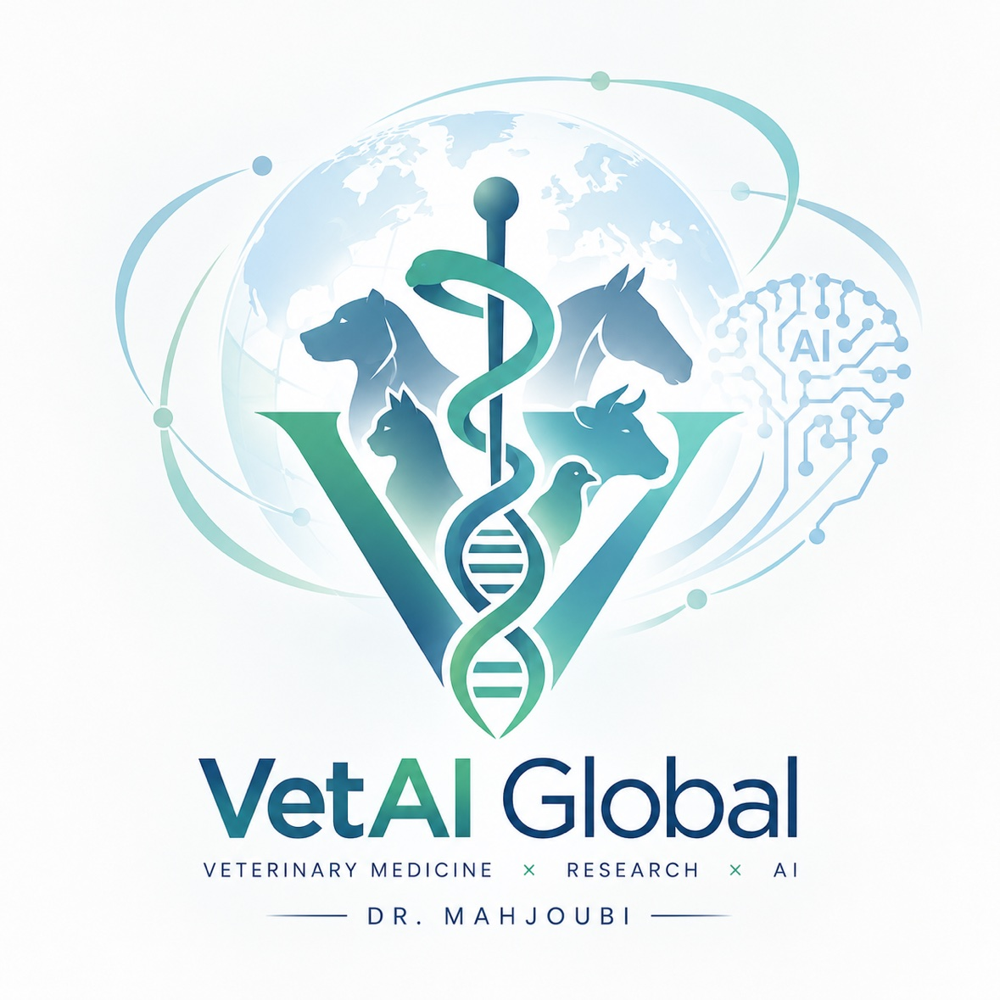
الشعار الرسمي للمنصة
ℹ️ عن المنصة
منصة بيطرية عربية مجانية بإشراف د. محجوبي عبدالناصر، تنس – الشلف، الجزائر.
🎯 رسالتنا
تبسيط المعرفة البيطرية الموثوقة للأطباء والطلاب والمربين، وربطها بأدوات عملية، وتوجيه الناس للطبيب المناسب في الوقت المناسب.
🧰 ماذا نقدم
مرجع سريري بنظام موحد، فهرس أمراض وتحاليل، فئات الأدوية والاستخدام الآمن، دروس واختبارات، مساعد ذكي، أدوات حاسبة، ومكتبة بوابات بحثية مجانية.
🛠️ كيف نبني المحتوى
1) نختار موضوعًا يحتاجه الزوار. 2) نكتبه بنظام ثابت: نظرة عامة، المسبب، الأعراض، التشخيص، العلاج والوقاية، نقاط رئيسية. 3) نقارنه بمراجع عامة مثل WOAH وFAO ودليل ميرك. 4) نضيف تاريخ التحديث وحالة المراجعة. 5) نصحح عند وصول ملاحظة.
🔬 المراجعة العلمية
الوضع الحالي: المقالات قيد المراجعة العلمية ولم تخضع بعد لتحكيم رسمي. نرحّب بالأطباء البيطريين والأساتذة الراغبين بالمراجعة، وسنذكر اسم المراجع وتاريخ مراجعته على كل مقال.
✉️ تواصل معنا
لا نخزّن رسالتك؛ تُفتح في تطبيقك لترسلها بنفسك.
الخصوصية والشروط
آخر تحديث: أكتوبر 2026
سياسة الخصوصية
• لا نطلب حسابات ولا نحتفظ ببياناتك على خادم.
• نخزّن في متصفحك فقط: وضع الألوان، نتائج الاختبارات، ذاكرة محادثة المساعد، والمحتوى الذي تحفظه. يمكنك مسحها بزر «مسح الذاكرة» أو من إعدادات المتصفح.
• عند استخدام المساعد الذكي يُرسَل نص سؤالك إلى خدمة الذكاء الاصطناعي بعد موافقتك لتوليد الرد؛ لا تكتب بيانات شخصية أو حساسة.
• تحميل خطوط Google وTailwind من خوادم خارجية قد يكشف عنوان IP لتلك الخدمات.
• الروابط الخارجية وواتساب والبريد تخضع لسياسات أصحابها.
• لا نستخدم إعلانات ولا تتبعًا تسويقيًا. للأطفال: يُنصح بإشراف الكبار.
• لطلب أي استفسار عن بياناتك راسلنا من صفحة «عن المنصة».
شروط الاستخدام
• المحتوى تعليمي ولا يغني عن فحص الطبيب البيطري وتشخيصه.
• ننشر جرعات دوائية مرجعية استرشادية في «دليل الأدوية» لأغراض مهنية وتعليمية؛ لا تعطِ حيوانك دواءً دون استشارة طبيب بيطري.
• في الحالات الطارئة اتصل بطبيبك فورًا ولا تعتمد على الموقع.
• نبذل جهدنا في الدقة لكن لا نضمن خلو المحتوى من الأخطاء، وإجابات الذكاء الاصطناعي قد تخطئ.
• الروابط لمواقع أخرى للتسهيل فقط، ولسنا مسؤولين عن محتواها.
• يجوز اقتباس النصوص مع الإشارة إلى المنصة؛ ولا يجوز إعادة نشرها تجاريًا دون إذن.
• قد نحدّث هذه الشروط، وتاريخ آخر تحديث مذكور أعلاه.
مصادر وإخلاء مسؤولية
تُقارَن المعلومات بمراجع عامة مثل WOAH وFAO ودليل ميرك البيطري، دون ادعاء تحكيم رسمي. الأسماء التجارية والدوائية أمثلة تعليمية.
Bioacoustic Logic · Translational Veterinary AI
الصوت الحيواني نظام له منطقه، لا لغة تنتظر الترجمة
نستخرج البنية من الإشارة: تردد أساسي، توافقيات، ونظم زمنية. ثم نضع كل نموذج على سلّم أدلة سريرية قبل أن يقترب من القرار العلاجي.
SIMULATED STREAM
F0 الأساسي—
مركز الطيف—
الطاقة RMS—
الأنماط الصوتية المرجّحة (توزيع أولي)
إشارات مولَّدة للعرض، وليست قياسات سريرية.
مصفوفة نضج الأدلة التشخيصية VTRI
اضغط درجة لتعرف معناها، أو اضغط أداة لترى موقعها وما ينقصها.
اكتمال الدليل المطلوب للترقّي
الأدوات والدرجات أمثلة توضيحية لعرض الإطار.